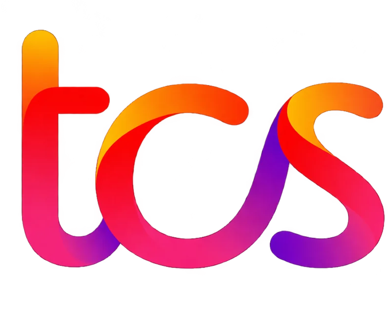

Websites & landing pages
Turn a hard-to-understand offer or low-confidence first impression into a focused experience that helps the right people understand, trust and act.
I work across product discovery, UX and digital delivery—turning customer and business problems into clear product decisions, usable experiences and prototypes.
Turn a hard-to-understand offer or low-confidence first impression into a focused experience that helps the right people understand, trust and act.
Replace scattered steps, manual hand-offs or clumsy tools with a focused application built around the way the work actually happens.
Make repetitive, context-heavy work easier with AI-assisted workflows that keep people in control of review, correction and consequential decisions.
The work should leave people with more than a convincing idea: a sharper problem, a defensible choice and something concrete to test, build or improve.
I look for the problem behind the request, weigh it against user and business needs, then define a practical direction that can be tested and delivered.
Identify who is affected, what they are trying to do and where the experience breaks down.
Compare the cost of the problem, the strength of the evidence and the alternatives.
Make the key flows, system behaviour, constraints and recovery paths clear.
Set a meaningful outcome and guardrails before deciding whether to expand, change or stop.
I look for a real user need, a consequential problem, a better option than the status quo and a way to tell whether the change helped.
Who is affected, in what context, and what are they trying to accomplish?
What does the problem cost in lost value, effort, risk or missed opportunity?
What could solve it with less complexity, and what trade-off comes with each option?
What would confirm the decision—and what result would make me change it?
A more useful feed starts when members can shape what they see—and trust what happens next.
Product analysis · Feed relevance · Member control
Bring scattered playlists together, find saved videos faster and make changes without losing control of your library.
concept · Library organisation · Workflow design
Promptless turns everyday AI tasks into guided workflows: choose the outcome, add the context that matters and refine a result you can use.
Interactive prototype · Task-focused AI workflows
At Tata Consultancy Services, I worked across enterprise applications, business requirements and engineering execution. I led root-cause analysis for high-priority defects, aligned engineering teams to resolve critical blockers, and worked with teams to clarify requirements and move complex features forward. I also led onboarding and knowledge transfer, and represented TCS on campus recruitment panels. The experience strengthened my ability to diagnose problems, understand system behaviour, weigh urgency against business impact and bring people together around a clear next step.

Led root-cause analysis for high-priority enterprise application defects and aligned engineering teams around critical blockers.
Collaborated with engineering teams to clarify requirements, resolve ambiguity and move complex features forward.
Balanced urgency and business impact while coordinating engineering teams around critical blockers. Led onboarding and knowledge transfer to help teams transition smoothly.
Represented TCS on campus recruitment panels, conducting structured candidate assessments. Progressed from Graduate Trainee to Associate System Engineer to System Engineer.
I connect the detail to the bigger picture: understand the problem, bring the right people into the decision and create a clear path from diagnosis to action.
I take work from the initial question through prioritisation and product definition, until a team has enough clarity to make and deliver the next decision.
A concise view of the customer problem, who experiences it, the business consequence and what still needs to be learned.
A reasoned recommendation that makes the priority, constraints and deliberate exclusions clear.
A build-oriented definition of what the product should do, how it should behave and where the edge cases sit.
A complete view of the journey: expected actions, decision points, errors and ways to recover.
A clear definition of where AI adds value, what context it needs and how the experience handles uncertain or poor outputs.
A practical way to learn whether the proposed change improves the intended behaviour without creating avoidable harm elsewhere.
The standard is simple: a team should know what to build, why it matters and what to check before moving ahead.
I tend to look beyond the obvious answer. I’m interested in what makes an experience intuitive, why real behaviour differs from what a process expects, and where a system creates effort that does not need to be there.
That curiosity takes me across product thinking, psychology, neuroscience, philosophy and design. I like connecting ideas that don’t usually sit in the same room, then bringing them back to something practical: a clearer problem, a better experience or a more useful way of working.
My work has taken me from enterprise technology into product exploration and hands-on prototyping. Across those settings, I like getting close to how things actually work, finding what needs to change and turning that into something concrete.
Shanmugha Arts, Science, Technology and Research Academy
Chaudhary Charan Singh University
Focused learning across UX, user psychology, generative AI and product development.
Awards and milestones from my time at TCS.
Whether you’re shaping a product, building a new idea or improving how your business works, I’m open to thoughtful conversations about the problem and what a useful solution could look like.